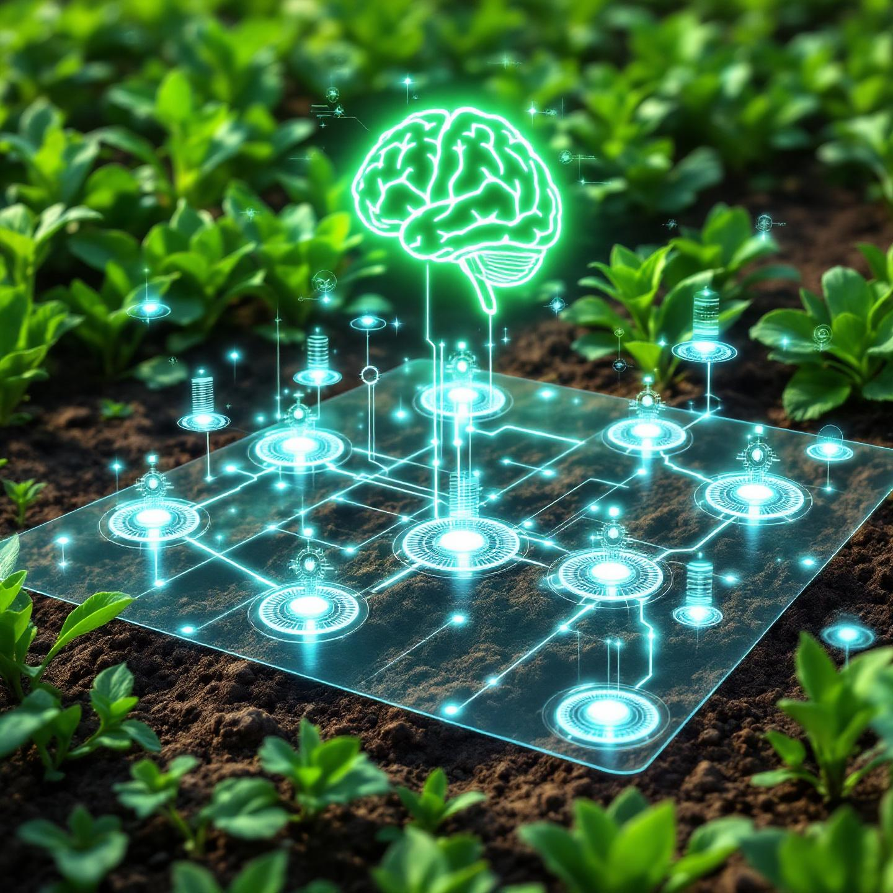
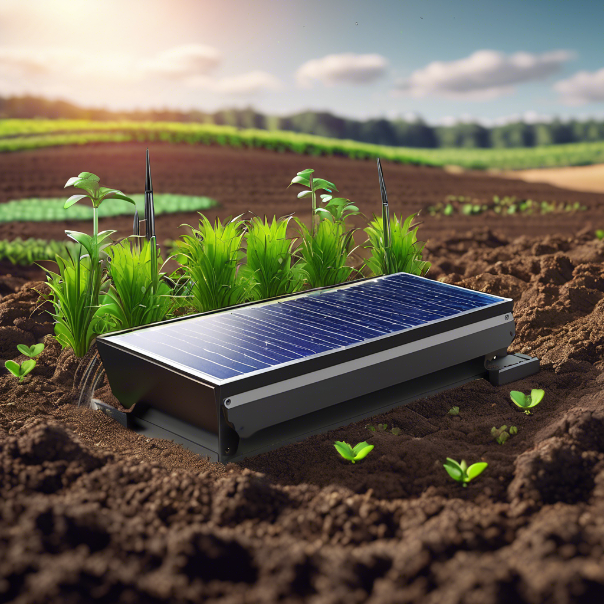
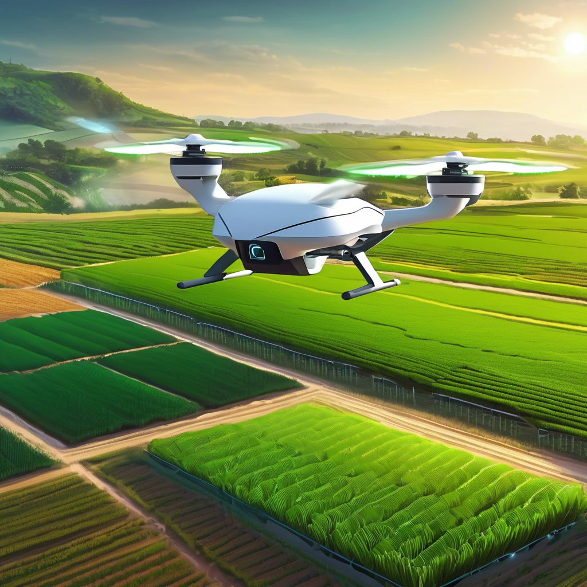

A AgroVius oferece uma plataforma integrada e intuitiva para monitorar solo, clima e operação agrícola em tempo real. A inteligência artificial ALICE analisa dados coletados e fornece recomendações práticas para melhorar sua produtividade e reduzir custos.
Desenvolvemos kits completos com sensores de umidade do solo, temperatura e umidade do ar (DHT22), sensor de luz (BH1750) e sensor de chuva, todos integrados com gateways LoRa/NB-IoT para conexão eficiente.
Em desenvolvimento, a integração com drones para monitoramento aéreo e maquinário autônomo para operações automatizadas, garantindo inovação e competitividade no campo.
